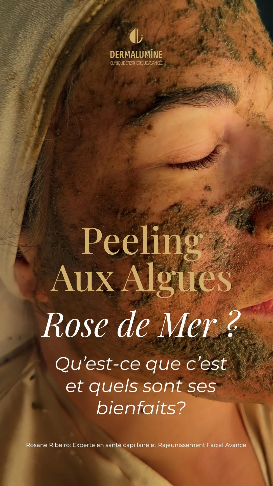
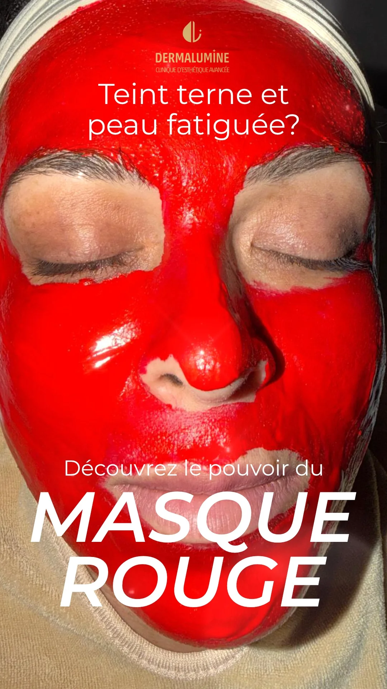

Creative thinking.
Measurable impact.
I bring content, performance marketing and automation together to build memorable brands and turn attention into real business opportunities.


DESIGN × STRATEGY× PERFORMANCE ✳
Building a brand people
want to follow.
From visual storytelling to lead generation: an integrated digital strategy for a beauty clinic in Québec.
Real followers · approximately 3× audience size
Ongoing content, brand positioning and campaign strategy
Reported by Meta Ads · Sept 1 – Oct 23, 2026
Selected social content
Original creative samples · Tap to enlarge
The follower growth and one-year account history are based on client/project experience provided for this portfolio. Campaign metrics below are from the attached Meta Ads export.
Beautiful work.
Backed by data.
Verified values extracted from an actual Meta Ads report for the Dermalumine “D01 | Gabi Depoimento” ad.
Lead acquisition snapshot
September 1 – October 23, 2026 · CAD
These bars compare raw counts rather than implying a conversion funnel. The spreadsheet does not contain daily results, so no 30-day claim or time-series trend is shown.
Turning campaign visibility into measurable inquiries.
60 reported leads at a CAD $8.41 cost per result, within the reporting period. Strong creative, paid distribution and a connected lead process work together to support follow-up.
More than a feed.
A connected presence.
Websites built to communicate a brand clearly and support its broader digital acquisition strategy.
From first click
to meaningful follow-up.
A practical lead-acquisition architecture developed across projects such as Dermalumine and Prospex Renovation.
ATTRACT
Google Ads
Meta Ads
Organic traffic
CAPTURE
Landing pages
Lead forms
Conversion events
AUTOMATE
Validate inputs
Route inquiries
Trigger workflows
FOLLOW UP
CRM updates
Team alerts
Sales response
MEASURE
Lead tracking
Conversion review
Optimization
Faster lead handling
Connecting marketing inquiries with lead records and staff notifications to support a timely response.
From request to sales follow-up
Connecting website inquiries to contact management and notifications so new opportunities enter a consistent process.
I connect the dots
between creativity
and growth.
I'm Cristiano Maciel, a digital creative and marketing specialist based in Montréal, Canada. My background spans over two decades of graphic design, motion design, web production and brand communication.
Today, I combine this creative foundation with social media strategy, Google Ads, Meta Ads and marketing automation. I enjoy building work that looks great, communicates clearly and helps businesses move from attention to action.
Have a project
or a position in mind?
Open to social media, digital marketing and growth-focused opportunities.
macielmotion@gmail.com ↗